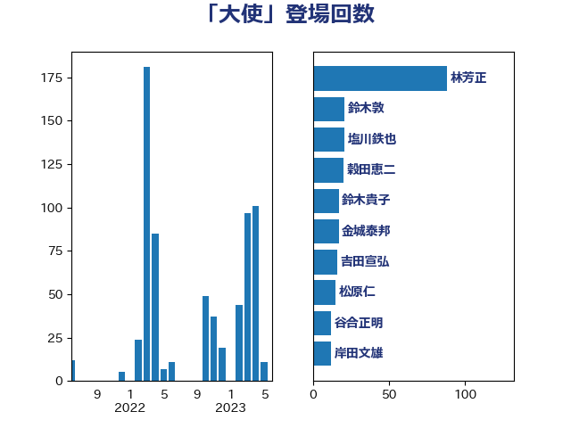

単語「大使」

| 茂木敏充 | 自由民主党 | 50 回 |
| 林芳正 | 自由民主党 | 45 回 |
| 鈴木貴子 | 自由民主党 | 17 回 |
| 吉田宣弘 | 公明党 | 13 回 |
| 城内実 | 自由民主党 | 13 回 |
| 小西洋之 | 立憲民主党 | 13 回 |
| 小泉進次郎 | 自由民主党 | 9 回 |
| 森本真治 | 立憲民主党 | 9 回 |
| 鈴木宗男 | 日本維新の会 | 9 回 |
| 鈴木敦 | 国民民主党 | 9 回 |
| 青山大人 | 立憲民主党 | 9 回 |
| 岸田文雄 | 自由民主党 | 8 回 |
| 穀田恵二 | 日本共産党 | 8 回 |
| 小熊慎司 | 立憲民主党 | 7 回 |
| 松原仁 | 立憲民主党 | 7 回 |
| 浦野靖人 | 日本維新の会 | 7 回 |
| 藤岡隆雄 | 立憲民主党 | 7 回 |
| 川合孝典 | 国民民主党 | 6 回 |
| 音喜多駿 | 日本維新の会 | 6 回 |
| 上田清司 | 国民民主党 | 5 回 |
| 伊波洋一 | 無所属 | 5 回 |
| 岸信夫 | 自由民主党 | 5 回 |
| 猪口邦子 | 自由民主党 | 5 回 |
| 羽田次郎 | 立憲民主党 | 5 回 |
| 辻清人 | 自由民主党 | 5 回 |
| 井上哲士 | 日本共産党 | 4 回 |
| 加藤勝信 | 自由民主党 | 4 回 |
| 嘉田由紀子 | 無所属 | 4 回 |
| 山下芳生 | 日本共産党 | 4 回 |
| 松島みどり | 自由民主党 | 4 回 |
| 渡辺周 | 立憲民主党 | 4 回 |
| 空本誠喜 | 日本維新の会 | 4 回 |
| 尾身朝子 | 自由民主党 | 3 回 |
| 櫻井周 | 立憲民主党 | 3 回 |
| 田名部匡代 | 立憲民主党 | 3 回 |
| 石川大我 | 立憲民主党 | 3 回 |
| 鈴木俊一 | 自由民主党 | 3 回 |
| 古川禎久 | 自由民主党 | 2 回 |
| 國場幸之助 | 自由民主党 | 2 回 |
| 大島敦 | 立憲民主党 | 2 回 |
| 太栄志 | 立憲民主党 | 2 回 |
| 小田原潔 | 自由民主党 | 2 回 |
| 山下雄平 | 自由民主党 | 2 回 |
| 徳永久志 | 立憲民主党 | 2 回 |
| 杉尾秀哉 | 立憲民主党 | 2 回 |
| 片山大介 | 日本維新の会 | 2 回 |
| 玄葉光一郎 | 立憲民主党 | 2 回 |
| 石橋通宏 | 立憲民主党 | 2 回 |
| 稲田朋美 | 自由民主党 | 2 回 |
| 笠井亮 | 日本共産党 | 2 回 |
| 篠原豪 | 立憲民主党 | 2 回 |
| 緑川貴士 | 立憲民主党 | 2 回 |
| 谷川とむ | 自由民主党 | 2 回 |
| 鈴木憲和 | 自由民主党 | 2 回 |
| 青木愛 | 立憲民主党 | 2 回 |
| 青柳仁士 | 日本維新の会 | 2 回 |
| 高橋光男 | 公明党 | 2 回 |
| 三宅伸吾 | 自由民主党 | 1 回 |
| 三木亨 | 自由民主党 | 1 回 |
| 三浦信祐 | 公明党 | 1 回 |
| 上川陽子 | 自由民主党 | 1 回 |
| 上杉謙太郎 | 自由民主党 | 1 回 |
| 中曽根康隆 | 自由民主党 | 1 回 |
| 井上信治 | 自由民主党 | 1 回 |
| 井坂信彦 | 立憲民主党 | 1 回 |
| 佐藤正久 | 自由民主党 | 1 回 |
| 佐藤茂樹 | 公明党 | 1 回 |
| 務台俊介 | 自由民主党 | 1 回 |
| 勝部賢志 | 立憲民主党 | 1 回 |
| 北村経夫 | 自由民主党 | 1 回 |
| 吉川ゆうみ | 自由民主党 | 1 回 |
| 和田有一朗 | 日本維新の会 | 1 回 |
| 小池晃 | 日本共産党 | 1 回 |
| 小野田紀美 | 自由民主党 | 1 回 |
| 山口壯 | 自由民主党 | 1 回 |
| 山本剛正 | 日本維新の会 | 1 回 |
| 岡田克也 | 立憲民主党 | 1 回 |
| 斉藤鉄夫 | 公明党 | 1 回 |
| 末松信介 | 自由民主党 | 1 回 |
| 杉本和巳 | 日本維新の会 | 1 回 |
| 江田憲司 | 立憲民主党 | 1 回 |
| 河野義博 | 公明党 | 1 回 |
| 片山さつき | 自由民主党 | 1 回 |
| 玉木雄一郎 | 国民民主党 | 1 回 |
| 田島麻衣子 | 立憲民主党 | 1 回 |
| 石川博崇 | 公明党 | 1 回 |
| 自見はなこ | 自由民主党 | 1 回 |
| 舟山康江 | 国民民主党 | 1 回 |
| 萩生田光一 | 自由民主党 | 1 回 |
| 藤川政人 | 自由民主党 | 1 回 |
| 藤巻健太 | 日本維新の会 | 1 回 |
| 谷合正明 | 公明党 | 1 回 |
| 足立敏之 | 自由民主党 | 1 回 |
| 道下大樹 | 立憲民主党 | 1 回 |
| 金城泰邦 | 公明党 | 1 回 |
| 金子恭之 | 自由民主党 | 1 回 |
| 阿部弘樹 | 日本維新の会 | 1 回 |
| 高市早苗 | 自由民主党 | 1 回 |
| 高木啓 | 自由民主党 | 1 回 |
| 高良鉄美 | 無所属 | 1 回 |